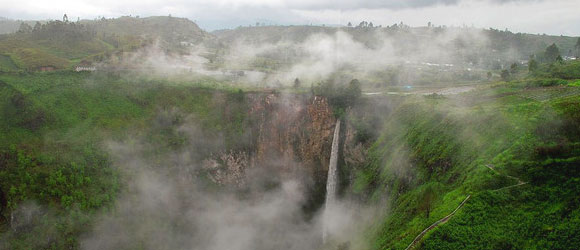
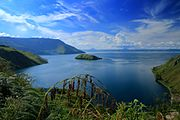
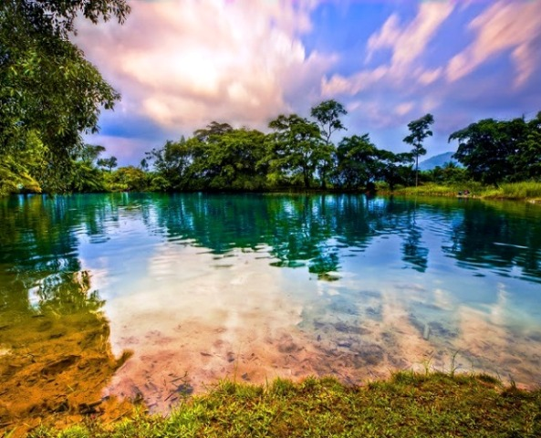

Mahasiswa tingkat 3 tepatnya semester 5 di Institut Teknologi Sumatera Utara, saya berasal dari Medan Sumatera Utara
SelengkapnyaAir terjun ini berada di perbukitan dengan ketinggian sekitar 800 mdpl dan dikelilingi oleh hutan pinus. Pengelolaan wisata alam air terjun ini dipegang oleh Pemda Kabupaten Karo. Dengan memiliki ketinggian sekitar 120 meter, Air Terjun Sipiso-piso merupakan salah satu air terjun tertinggi di Indonesia.
Danau Toba adalah danau alami berukuran besar di Indonesia yang berada di kaldera Gunung Berapi Super. Danau ini memiliki panjang 100 kilometer (62 mil), lebar 30 kilometer (19 mi), dan kedalaman 1600 meter (5200 ft)
Sebuah danau dengan airnya yang berwarna hijau tosca namun dari sisi lain warna airnya dapat terlihat biru. Danau tersebut termasuk danau vulkanik karena mengandung belerang sehingga bermanfaat untuk kesehatan kulit,
